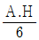
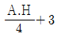
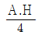
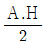
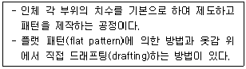
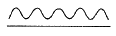
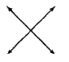
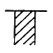

양장기능사 (2015-10-10 기출문제)
1과목: 임의 구분
1. 다음 중 안감의 역할이 아닌 것은?
- 겉감에 땀 등 분비물이 묻어 상하는 것을 방지한다.
- 탄성회복률이 나쁜 겉감의 변형을 막는다.
- 겉감의 내충성과 내균성을 유지시켜 준다.
- 겉감의 마모를 방지한다.
(정답률: 50%)

2. 다음 중 활동을 가장 편하게 할 수 있는 소매산의 높이는?




(정답률: 87%)
3. 기모노 슬리브가 매우 짧아진 형태로서 소매길이가 어깨점에서 5~10cm 정도 연장된 슬리브는?
- 돌먼 슬리브
- 래글런 슬리브
- 케이프 슬리브
- 프레치 슬리브
(정답률: 69%)
4. 너비가 150cm 인 옷감으로 타이트 스커트를 만들 때 옷감량의 필요량 계산법으로 옳은 것은?
- (스커트 길이 × 2) + 시접
- 스커트 길이 × 2
- (스커트 길이 × 1.5) + 시접
- 스커트 길이 + 시접
(정답률: 74%)
5. 봉사의 소요량 산출에 영향을 미치는 요인 중 직접적인 요인이 아닌 것은?
- 천의 두께
- 봉사의 굵기
- 스티치의 길이
- 재봉기의 자동봉사 절단기의 사용여부
(정답률: 85%)
6. 심감의 기본 시접 분량 중 틀린 것은?(오류 신고가 접수된 문제입니다. 반드시 정답과 해설을 확인하시기 바랍니다.)
- 목둘레 : 1 cm
- 앞중심선 : 1 cm
- 어깨 : 1.5 cm
- 밑단 : 5 cm
(정답률: 37%)
7. 소매원형 제도에 필요한 약자 중 소매산 높이를 나타내는 것은?
- A.H
- S.C.H
- S.B.L
- E.L
(정답률: 85%)
8. 보정 방법에 대한 설명 중 틀린 것은?
- 목둘레선이 들뜨는 것은 목둘레가 커서 생기는 현상으로 목둘레선을 높여 앞·뒤판을 맞춘다.
- 앞·뒤 어깨선에 타이트한 주름이 생길 경우(어깨가 솟은 경우)에는 어깨선을 올려 보정하고 그 분량만큼 진동 밑부분을 올려 준다.
- 가슴 부위가 당길 때는 B.P를 지나 다트의 중간과 어깨 부위에 선을 넣어 늘어지는 부분이 없어지도록 접어 준 다음 다트를 다시 잡아 준다.
- 진동둘레가 너무 좁은 경우에는 가위집을 넣은 후 새로운 진동선을 그린다.
(정답률: 61%)
9. 다음 중 신체치수 측정 시 줄자의 눈금 있는 쪽이 각 기준점에 닿도록 줄자를 약간 세워서 재는 부위는?
- 가슴둘레
- 손목둘레
- 목밑둘레
- 엉덩이둘레
(정답률: 81%)
10. 소매 앞, 뒤에 주름이 생길 때 보정 방법으로 가장 적합한 것은?
- 소매산 중심점을 앞소매 쪽으로 옮기고, 소매산 둘레의 곡선을 수정한다.
- 소매산 중심점을 뒷소매 쪽으로 옮기고, 소매산 둘레의 곡선을 수정한다.
- 소매산을 낮추어 준다.
- 소매산을 높여 준다.
(정답률: 77%)
11. 중년층이나 노년층에 많은 체형으로 몸 전체에 부피감이 없고 목이 앞쪽으로 기울고, 등이 구부정하며 엉덩이와 가슴이 빈약한 체형은?
- 반신체
- 후견체
- 후신체
- 굴신체
(정답률: 88%)
12. 밑위 길이(croth length)의 측정 길이에 대한 설명으로 옳은 것은?
- 경부근점으로부터 유두점을 통과하여 허리둘레선까지의 길이
- 허리둘레선의 옆중심점에서 엉덩이둘레선까지의 길이
- 의자에 앉았을 때 허리둘레선의 옆중심점으로부터 의자바닥까지의 길이
- 경부근점으로부터 유두점까지의 길이
(정답률: 96%)
13. 인체 계측에서 앞길이의 치수를 재는 방법은?
- 좌우 유두의 거리를 잰다.
- 오른쪽 목옆점에서 유두까지 잰다.
- 오른쪽 목옆점에서 수직으로 허리선까지 잰다.
- 오른쪽 목옆점에서 유두를 지나 허리선까지 잰다.
(정답률: 80%)
14. 심지를 사용하는 이유가 아닌 것은?
- 의복을 반듯하게 하기 위해서
- 형태를 변형시키지 않기 위해서
- 안정된 모양을 갖기 위해서
- 빳빳한 느낌을 갖기 위해서
(정답률: 87%)
15. 옷감의 너비가 110cm 일 때 옷감량의 필요량 계산법으로 옳은 것은?
- 슬랙스 = 슬랙스 길이 + 시접
- 플레어 스커트 = (스커트 길이 × 1.5) + 시접
- 반소매 블라우스 = 블라우스 길이 + 소매 길이 + 시접
- 긴 소매 슈트 = (재킷 길이 × 2) + 스커트 길이 + 소매 길이 + 시접
(정답률: 58%)
16. 인치계측 방법 중 직접법에 대한 설명으로 틀린 것은?
- 계측기구가 비싸며 계측기준의 설정이 비교적 어렵다.
- 굴곡있는 체표면의 실측길이를 얻을 수 있다.
- 표준화된 계측기구가 필요하다.
- 계측이 장시간 걸리기 때문에 피계측자의 자세가 흐트러져 자세에 의한 오차가 생기기 쉽다.
(정답률: 84%)
17. 다음 설명에 해당하는 것은?

- 연단
- 평면재단
- 입체재단
- 그레이딩
(정답률: 66%)
18. 가봉한 옷을 착용한 후 전체 균형과 세부적으로 파악하는 것은?
- 수정
- 보정
- 시착
- 연단
(정답률: 74%)
19. 주로 청바지의 솔기나 작업복, 스포츠 의류 등에 많이 사용하며, 솔기가 뜯어지지 않게 처리하는 바느질 방법은?
- 쌈솔
- 통솔
- 가름솔
- 파이핑 솔기
(정답률: 87%)
20. 의복원형 제도법 중 장촌식 제도방법에 가장 중요한 치수는?
- 허리둘레
- 가슴둘레
- 신장
- 엉덩이둘레
(정답률: 89%)
2과목: 임의 구분
21. 단촉식 제도법의 설명으로 옳은 것은?
- 인체 계측에 숙련된 기술이 필요 없다.
- 인체의 각 부위를 세밀하게 계측하여 제도한다.
- 가슴둘레를 기준해서 등분한 치수로 구성해 가는 밥업이다.
- 인체부위 중 가장 대표가 되는 부위치수를 기준으로 제도한다.
(정답률: 76%)
22. 다음 의복 제도에 필요한 부호의 연결이 틀린 것은?
- 오그림 –

- 안단선 -
- 바이어스 -

- 올의 방향 –
(정답률: 85%)
23. 포플린 옷감에 가장 적합한 재봉바늘은?
- 9호
- 11호
- 14호
- 16호
(정답률: 74%)
24. 옷감의 패턴 배치와 표시에 대한 설명 중 틀린 것은?
- 룰렛이나 트레이싱 페이퍼를 사용할 때에는 완성선에서 0.1cm 안쪽에 굴게 표시한다.
- 벨벳, 코듀로이와 같이 짧은 털이 있는 옷감은 결 방향을 위로 향하게 한다.
- 패턴은 큰 것부터 배치하고 작은 것은 큰 것 사이에 배치한다.
- 옷감의 표면이 안으로 들어가게 반을 접어 패턴을 배치한다.
(정답률: 83%)
25. 의복구성을 위한 체표구분 중 체간부의 전면에 해당하는 것은?
- 배부
- 복부
- 요부
- 상완부
(정답률: 67%)
26. 다음 의복 제도에 필요한 부호의 의미는?

- 골선
- 주름
- 다트
- 늘림
(정답률: 91%)
27. 가봉 방법에 대한 설명 중 틀린 것은?
- 바늘은 옷감에 직각으로 꽂아 옷감이 울지 않게 한다.
- 바이어스감과 직선으로 재단된 옷감을 붙일 때는 직선으로 재단된 옷감을 위로 겹쳐 놓고 바느질한다.
- 바느질 방법은 손바느질의 상침 시침으로 한다.
- 단추는 같은 크기로 종이나 옷감을 잘라서 일정한 위치에 붙여 본다.
(정답률: 73%)
28. 단을 처리할 때 사용되는 손바느질 방법이 아닌 것은?
- 공그르기
- 감치기
- 새발뜨기
- 반박음질
(정답률: 87%)
29. 풀기가 있는 옷감의 정리 방법으로 가장 적합한 것은?
- 전체를 물에 담갔다가 축축할 때 풀기 없는 헝겊을 대고 다림질한다.
- 풀기가 빠지지 않도록 물을 뿌린 후 다림질한다.
- 풀기가 있으므로 마른 상태에서 다림질한다.
- 전체를 물에 담궜다가 건져서 탈수시켜 완전히 건조시킨 후 다림질한다.
(정답률: 71%)
30. 제조원가의 3요소가 아닌 것은?
- 인건비
- 관리비
- 재료비
- 제조경비
(정답률: 85%)
31. 천염섬유 중 섬유의 길이가 가장 긴 것은?
- 면
- 견
- 아마
- 양모
(정답률: 79%)
32. 다음 중 합성섬유에 해당되지 않는 것은?
- 나일론
- 아크릴
- 아세테이트
- 비닐론
(정답률: 62%)
33. 화학방사법의 종류 중 물 또는 약품 수용액 중에 사출하여 방사원액을 응고하는 방법은?
- 습식방사
- 건식방사
- 용융방사
- 자연방사
(정답률: 54%)
34. 다음 중 흡수성이 좋고 열전도성이 우수하여 여름용 옷감으로 가장 적합한 섬유는?
- 아크릴
- 아마
- 나일론
- 견
(정답률: 88%)
35. 다음 중 습윤 시 강도가 가장 많이 감소되는 섬유는?
- 비닐론
- 레이온
- 양모
- 아크릴
(정답률: 58%)
36. 다음 중 항중식 번수로 실의 굵기를 나타내는 것은?
- 면사
- 견사
- 나일론사
- 폴리에스터사
(정답률: 71%)
37. 다음 중 가방성(可紡性)과 관계가 없는 것은?
- 섬유의 굵기
- 섬유의 권축
- 섬유의 길이
- 섬유의 가소성
(정답률: 65%)
38. 실을 용도에 따라 분류할 때 해당되지 않는 것은?
- 직사
- 자수사
- 교합사
- 수편사
(정답률: 52%)
39. 10cm의 섬유에 외력을 가하여 11cm로 늘인 후 외력을 제거하였더니 10.5cm가 되었다. 이 섬유의 탄성회복률(%)은?
- 20%
- 30%
- 50%
- 70%
(정답률: 90%)
40. 마섬유의 종류 중 순수한 셀룰로스 함유량이 가장 많은 것은?
- 아마
- 대마
- 저마
- 황마
(정답률: 63%)
3과목: 임의 구분
41. 빨강 바탕위의 자주색보다 회색 바탕위의 자주색이 더 선명하게 보이는 대비는?
- 색상대비
- 명도대비
- 채도대비
- 보색대비
(정답률: 38%)
42. 다음 중 가장 밝은 색으로 진출색이며, 팽창색이고 가시도가 매우 높아 레인코트(rain coat)에 많이 사용되는 색은?
- 주황
- 노랑
- 빨강
- 파랑
(정답률: 92%)
43. 통일의 개념이 아닌 것은?
- 부분과 부분이 분리될 수 없다.
- 단일성의 느낌이 조화의 미로 나타난다.
- 일체감의 완성적 성격을 가지고 있다.
- 상호 종속적이지 않으면서도 서로 보완적인 효과를 거둔다.
(정답률: 63%)
44. 다음 중 디자인의 원리가 아닌 것은?
- 비례
- 색채
- 균형
- 통일
(정답률: 65%)
45. 색상끼리 서로 공통점이 없이 대비되기 때문에 강렬한 이미지를 표현하는 스포츠웨어에 많이 이용되는 색상의 조화는?(오류 신고가 접수된 문제입니다. 반드시 정답과 해설을 확인하시기 바랍니다.)
- 유사색상조화
- 보색조화
- 분보색조화
- 3각조화
(정답률: 47%)
46. 다음 중 명도의 동화 현상에 의해 회색이 밝아 보이는 것은?
- 회색 배경에 가는 하얀선이 일정한 간격으로 반복되어 그려진 경우
- 회색 배경에 가는 검은선이 일정한 간격으로 반복되어 그려진 경우
- 회색 배경에 굵은 하얀선이 일정한 간격으로 반복되어 그려진 경우
- 회색 배경에 굵은 검은선이 일정한 간격으로 반복되어 그려진 경우
(정답률: 64%)
47. 문-스펜서(P.Moon & D.E.Spencer)의 색채조화론 중 색상, 명도, 채도별로 이루어지는 조화가 아닌 것은?
- 동일조화
- 유사조화
- 대비조화
- 제1부조화
(정답률: 78%)
48. 곡선 중에서 매우 우아한 느낌을 주며, 네크라인이나 절개선에 사용하기도 하고 신체를 전체적으로 장식하는 트리밍선으로 사용하는 것은?
- 스캘럽(scallop)
- 나선(spiral)
- 파상선(wave)
- 타원(oveal)
(정답률: 67%)
49. 강조에 대한 설명 중 틀린 것은?
- 특별한 용도의 의복이 아니면 지나친 강조는 오히려 디자인의 질을 떨어뜨린다.
- 업무능력이 중요시되는 직장복에는 최소한의 강조만 하도록 한다.
- 스포츠웨어는 일상복에 대하여 강한 색채대비는 비효과적이다.
- 강한 강조점을 효과적으로 활용함으로써 미적으로 우수하고 상황에 적합한 디자인을 할 수 있다.
(정답률: 86%)
50. 무늬의 배열 중 90° 또는 45° 변환의 경사, 위사 두 방향에서 같은 무늬의 효과를 지니는 것은?
- 전체(all-over) 배열
- 사방(four-way) 배열
- 두방향(two-way) 배열
- 한방향(one-way) 배열
(정답률: 65%)
51. 의복의 성능 중 사람에 따라 성능의 요구도가 차이가 있으며 유행에 지배되기 쉬운 것은?
- 위생적 성능
- 내구적 성능
- 관리적 성능
- 감각적 성능
(정답률: 88%)
52. 피복에 발생된 곰팡이를 제거하는 데 가장 효과적인 건열처리 조건으로 옳은 것은?
- 40℃에서 20분
- 60℃에서 10분
- 75℃에서 5분
- 80℃에서 10분
(정답률: 71%)
53. 의복의 위생적 성능에 해당되지 않는 것은?
- 내마모성
- 투습성
- 보온성
- 흡습성
(정답률: 77%)
54. 다음 중 위생가공이 아닌 것은?
- 퍼마켐(Permachem) 가공
- 논스탁(Nonstac) 가공
- 바이오실(Biosil) 가공
- 런던 슈렁크(London shrunk) 가공
(정답률: 78%)
55. 계면활성제의 작용이 아닌 것은?
- 습윤작용
- 유화작용
- 분산작용
- 증량작용
(정답률: 78%)
56. 필링(pilling)에 대한 설명 중 틀린 것은?
- 섬유나 실의 일부가 직물 또는 편성물에서 빠져나와 탈락되지 않고 표면에서 뭉쳐서 섬유의 작은 방울이 생기는 것이다.
- 섬유의 강신도가 클 때 잘 생긴다.
- 실의 꼬임이 많을 때 덜 생긴다.
- 조직이 치밀하면 잘 생긴다.
(정답률: 49%)
57. 견 섬유에 금속염을 처리하여 중량을 증대시키는 가공은?
- 플록 가공
- 증량 가공
- 캘린더 가공
- 기모 가공
(정답률: 77%)
58. 다음 중 직물의 삼원조직이 아닌 것은?
- 평직
- 능직
- 문직
- 수자직
(정답률: 85%)
59. 다음 중 변화직물의 조직이 아닌 것은?
- 사문직
- 파능직
- 주야수자직
- 바스켓직
(정답률: 53%)
60. 염료분자와 섬유가 공유결합을 형성하는 염료는?
- 산성염료
- 직접염료
- 염기성염료
- 반응성염료
(정답률: 63%)